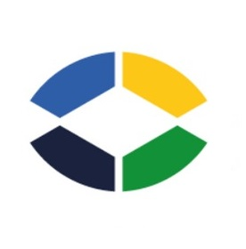

carregando...

BRASMAT MES
sistema de execução de manufatura
Buscar Peça
Cliente ▾
Demanda Cliente
Consulta Cliente
Expedição
Produção ▾
Kanban
Painel
Apontamentos
Editar Apontamento
Peças paradas
Indicadores ▾
Prazos
OTD
Ordens em Aberto
Performance
Qualidade
Separação Relatório
Cadastro ▾
Item
Separação
Roteiro
↻ atualizar
carregando...
De
até
Todos os processos
Aplicar
Limpar
Filtros:
🔴 Ignorar >1 dia
⚡ Ignorar <5 min
Ranking de operadores
🏆 Maior volume
✅ Melhor apontamento
⚡ Mais operações
⏱ Mais rápido
📋 Mais sem saída
🔄 Mais retrabalhos
clique num operador para ver o detalhe
carregando...
👷
Selecione um operador no ranking para ver a análise completa de performance.